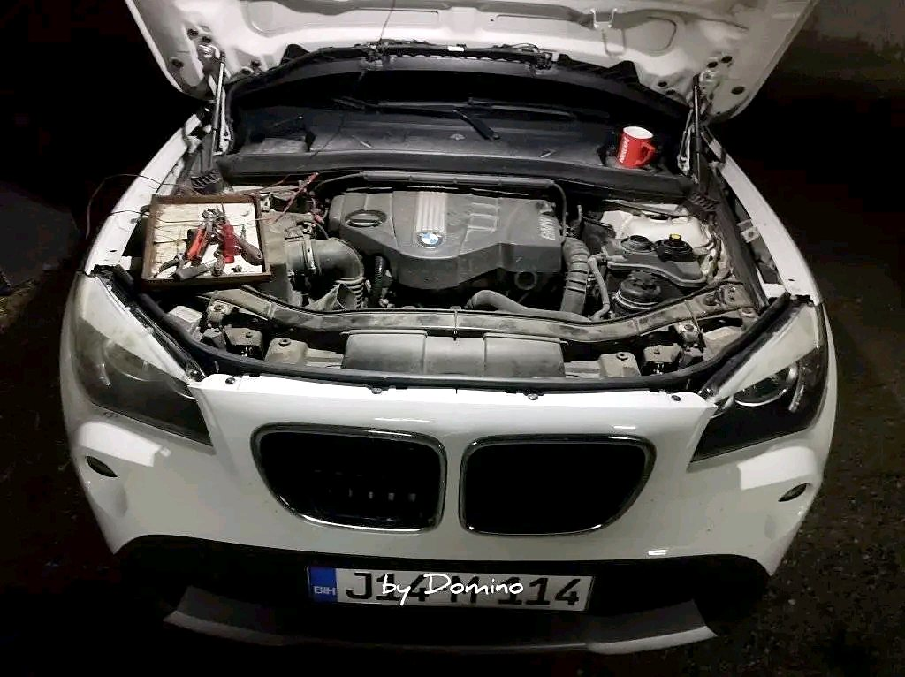
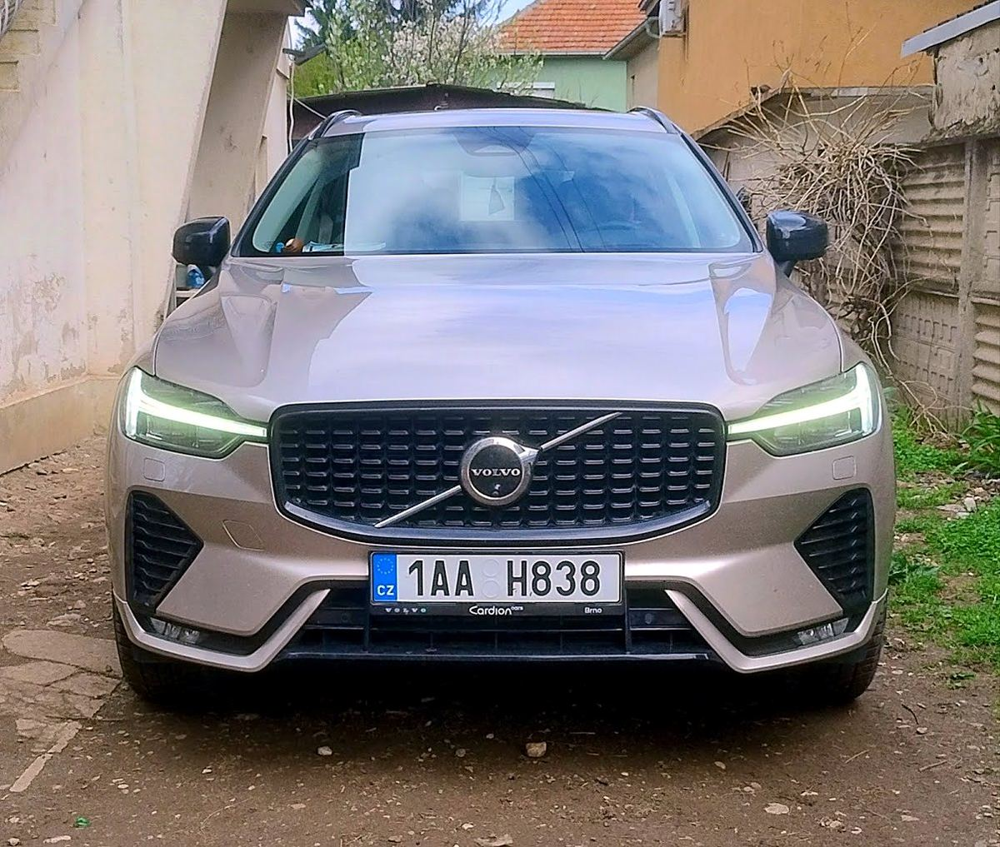

Ne postoje nerešivi kvarovi.
Autoservis Domino u Pantelju, Niš. Popravljamo i održavamo Volvo, Mercedes, BMW, Audi i još mnogo drugih marki, uz kompjutersku dijagnostiku i originalne Volvo delove.
Radnim danima od 09:00 do 17:00, subotom do 14:00


Volvo servis sa originalnim delovima
Popravka i održavanje Volvo automobila uz originalne Volvo delove. Sve na jednom mestu, od dijagnostike do popravke.
- Popravke i redovno održavanje
- Originalni Volvo delovi
- Kompjuterska dijagnostika
Šta radimo
Od redovnog servisa do ultrazvučnog čišćenja dizni. Ne znate šta se dešava sa vašim autom? Krenite od dijagnostike.
Popravka i dijagnostika
-
Popravka i održavanje vozila
Mehanički radovi i redovno održavanje za sve marke sa spiska ispod. Za Volvo ugrađujemo originalne Volvo delove.
-
Kompjuterska dijagnostika
Očitavamo greške iz kompjutera vozila da bismo pronašli pravi uzrok kvara pre nego što se menja bilo koji deo.
-
Brzi servisi
Redovno održavanje bez dugog čekanja. Pozovite i dogovorite termin.
Čišćenje dizni, EGR ventila i sistema za gorivo
-
Ultrazvučno pranje dizni
Dizne se skidaju i čiste ultrazvukom. Zaprljane dizne često znače trzanje motora i veću potrošnju goriva.
-
Ultrazvučno pranje EGR ventila
Zaprljan EGR ventil može da izazove gubitak snage, dim iz auspuha i grešku na instrument tabli. Čistimo ga ultrazvukom.
-
Wynn's dizel tretman
Čišćenje sistema za gorivo bez rasklapanja, namenjeno dizel motorima.
Marke koje servisiramo
- Volvo originalni delovi
- Mercedes
- BMW
- Audi
- VW
- Škoda
- Seat
- Opel
- Ford
- Renault
- Peugeot
- Citroën
- Fiat
- Alfa Romeo
- Toyota
- Honda
- Mazda
- Nissan
- Dacia
- Chevrolet
- Jeep
- Chrysler
- Saab
- Lancia
- Land Rover
- Suzuki
Iz radionice
Recenzije klijenata
Ocene vozača sa našeg Google profila.
★★★★★
Neverovatan čovek! Bili smo na vikendu u Nišu, imali smo mali problem sa autom i majstor ga je odmah primio da radi, vrlo brzo završio sa rešavanjem problema i mogli smo da nastavimo put. Ako imate problem sa autom, obavezno dođite kod ovog majstora!! 10+++
★★★★★
Čovek mi spasao letovanje. Pokvario mi se auto na putu za more u Grčku. Čovek me primio van radnog vremena, popravio auto za sat vremena po normalnoj ceni i ja sam najnormalnije nastavio na more.
★★★★★
Ako tražite majstora u Nišu kome zapravo možete da verujete, ovo je pravo mesto. Primili su me u najkraćem roku. Nema izmišljanja skrivenih troškova i kvarova, što se nama ženama vozačima prečesto dešava na drugim mestima. Ovaj servis odlikuju poštenje i profesionalizam. Ljubazni, stručni i sa veoma korektnim cenama. Čista desetka za rad! Hvala na pomoći. Svako dobro!
Dođite ili pozovite
Za najbrži odgovor pozovite. Recite marku i model auta i šta se dešava.
063 191 4147 Krfska 10, Pantelej18103 Niš
Radnim danima od 09:00 do 17:00, subotom do 14:00
- Ponedeljak09:00–17:00
- Utorak09:00–17:00
- Sreda09:00–17:00
- Četvrtak09:00–17:00
- Petak09:00–17:00
- Subota09:00–14:00
- NedeljaZatvoreno